等級加標示與加權分數對照表
等級加標示與答對題數對照表
各科等級加標示人數百分比統計表
第一部分:選擇題(1 ~ 26 題)
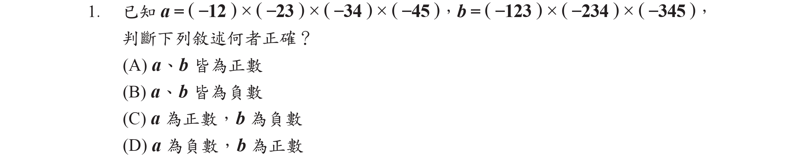通過率 0.90
答案
(C)
詳解
\(a\) 有4個負數相乘，所以為正數。
\(b\) 有3個負數相乘，所以為負數。
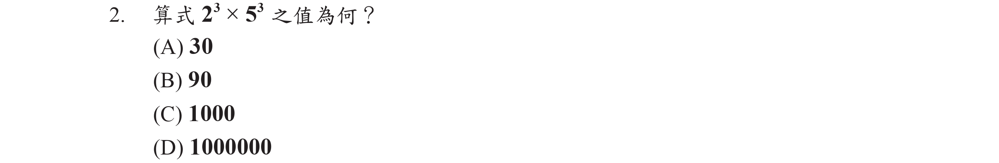
通過率 0.90
答案
(C)
詳解
\(2^3 \times 5^3=10^3=1000\)
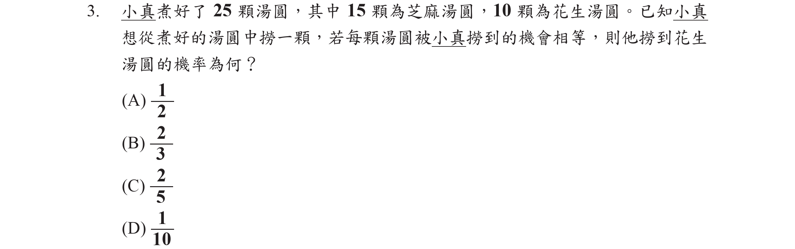
通過率 0.87
答案
(C)
詳解
總數量 ＝ 25 顆
花生湯圓 ＝ 10 顆
機率\(=\frac{符合條件的數量}{總數量}=\frac{10}{25}=\frac{2}{5}\)
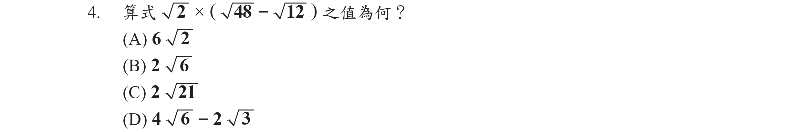
通過率 0.74
答案
(B)
詳解
\(\sqrt2 \times (\sqrt 48 - \sqrt 12)\)
\(=\sqrt2 \times (4\sqrt 3 - 2\sqrt 3)\)
\(=\sqrt2 \times 2\sqrt 3\)
\(=2\sqrt 6\)
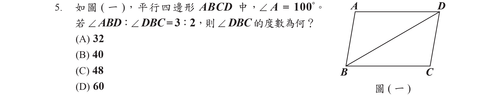
通過率 0.76
答案
(A)
詳解
\(\angle ABC = 180^\circ - \angle A =180^\circ - 100^\circ = 80^\circ\) (同位角互補)
\(\angle DBC = \frac{2}{5}\angle ABC =\frac{2}{5} \times 80^\circ = 32^\circ\)
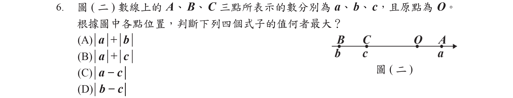
通過率 0.78
答案
(A)
詳解
\(|a|=\overline {OA}\)
\(|b|=\overline {OB}\)
\(|c|=\overline {OC}\)
\(|a-c|=\overline {AC}\)
\(|b-c|=\overline {BC}\)
\(\therefore |a|+|b|=\overline {OA}+\overline {OB}=\overline {AB}\) 最長
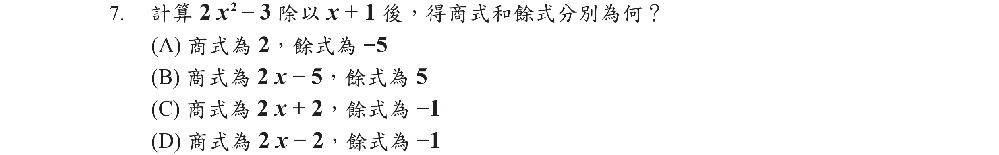
通過率 0.73
答案
(D)
詳解
缺項要補 0 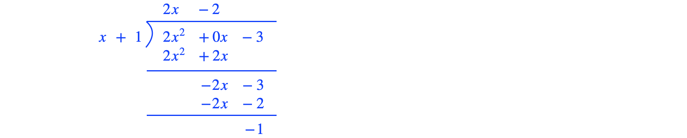
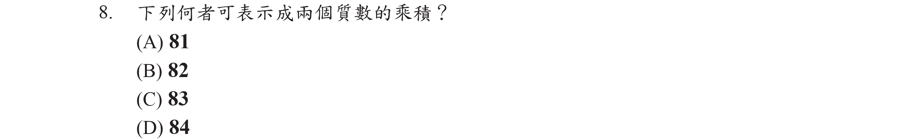
通過率 0.59
答案
(b)
詳解
\(81=3^4\)
\(82=2\times 41\)
\(83=1 \times 83\) (1 不是質數)
\(84=2^2 \times 3 \times 7\)
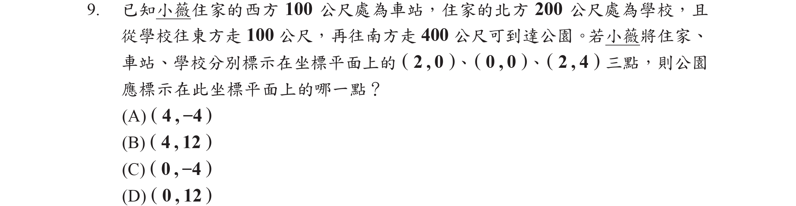
通過率 0.78
答案
(a)
詳解
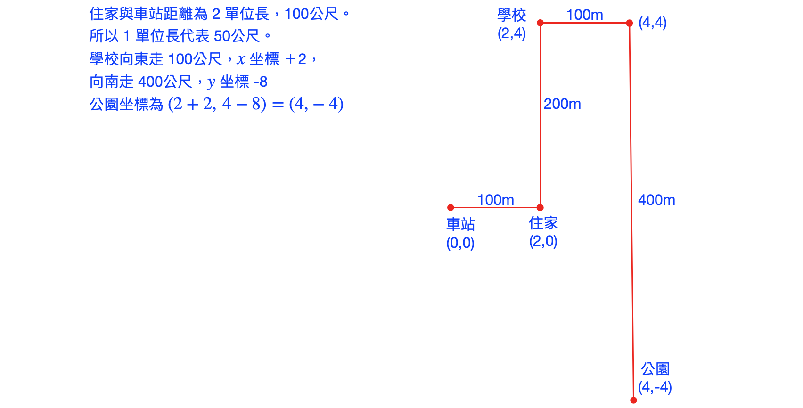
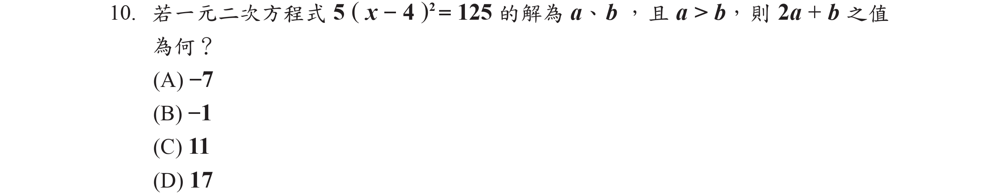
通過率 0.68
答案
(d)
詳解
已經配方好的方程式，不要再乘開喔~ \(5(x-4)^2=125\)
\(\Rightarrow (x-4)^2=25\)
\(\Rightarrow x-4=\pm 5\)
\(\Rightarrow x=4\pm 5=9\ or -1\)
\(a=9,\ b=-1\)
\(2a+b=18-1=17\)
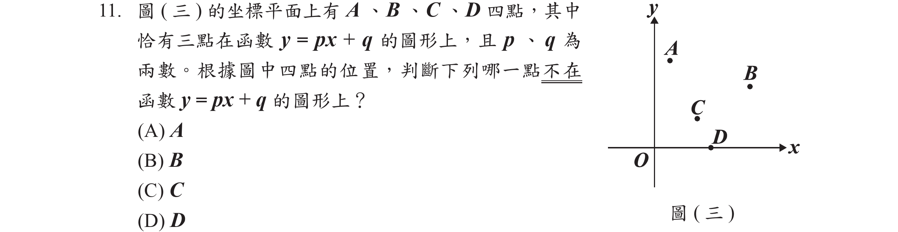
通過率 0.64
答案
(b)
詳解
\(y=px+q\) 為一直線
只有 \(B\) 與其它三點不在一直線上。
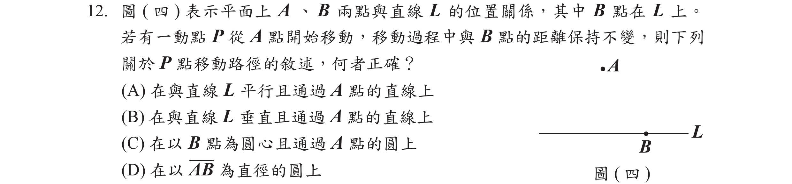
通過率 0.65
答案
(c)
詳解
圓的定義：到圓心等距離的所有點集合
\(P\) 的路徑為與 \(B\) 距離相等的點集合
也就是以 \(B\) 為圓心，\(\overline {AB}\) 為半徑的圓
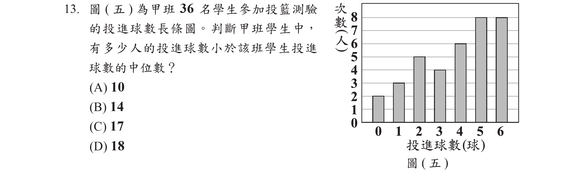
通過率 0.65
答案
(b)
詳解
36名學生，中位數落在第 18、19名的分數平均。
圖中次數由小到大累加，第18、19人皆落在 4球，因此中位數 \(=4\)
小於 4球的有：0球 2人，1球 3人，2球 5人，3球 4人
共 \(2+3+5+4=14\) 人
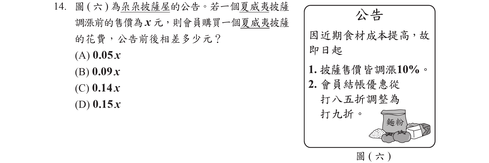
通過率 0.54
答案
(c)
詳解
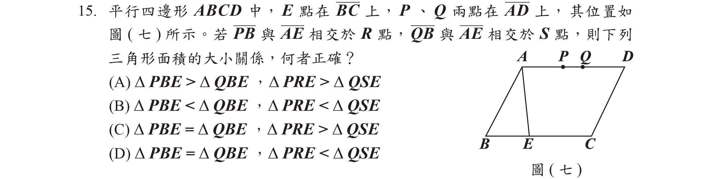
通過率 0.52
答案
(d)
詳解
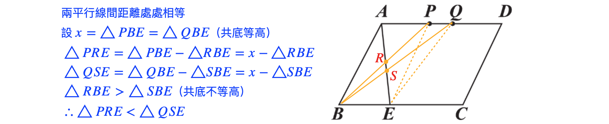
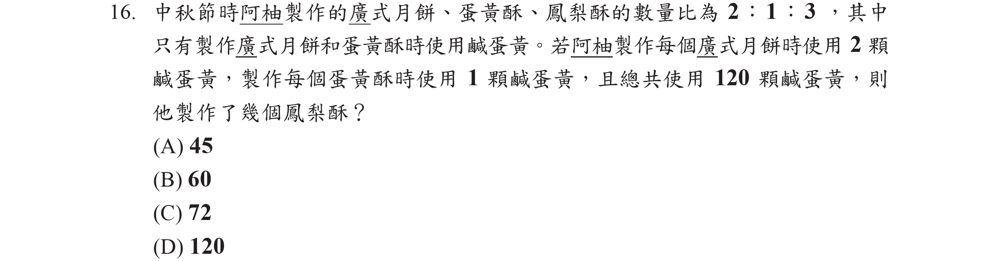
通過率 0.49
答案
(c)
詳解
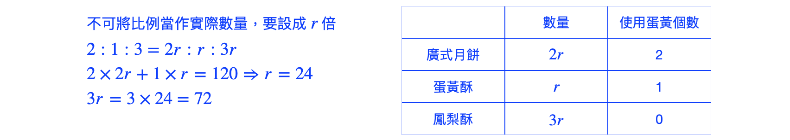
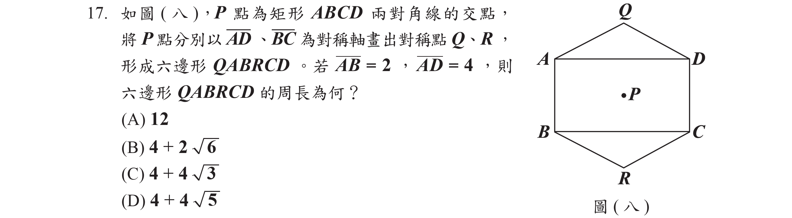
通過率 0.47
答案
(D)
詳解
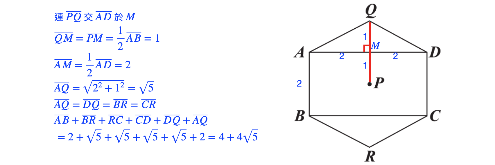
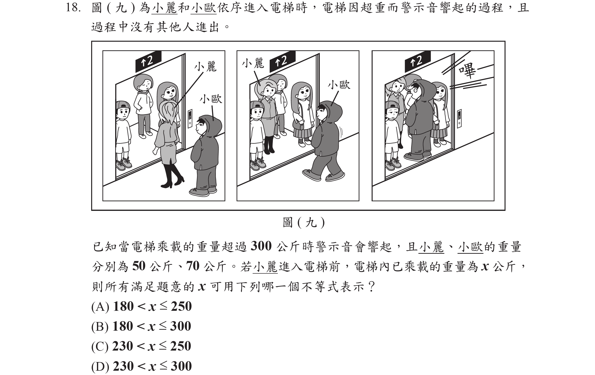
通過率 0.46
答案
(A)
詳解
小麗進去電梯沒有響，表示加上小麗的重量 \(\leq 300\)
\(\Rightarrow x+50\leq 300\)
\(\Rightarrow x\leq 250\)
小歐隨後進去電梯超重，表示再加上小歐的重量 \(>300\)
\(\Rightarrow x+50+70 > 300\)
\(\Rightarrow x > 180\)
\(\therefore 180 < x \leq 250\)
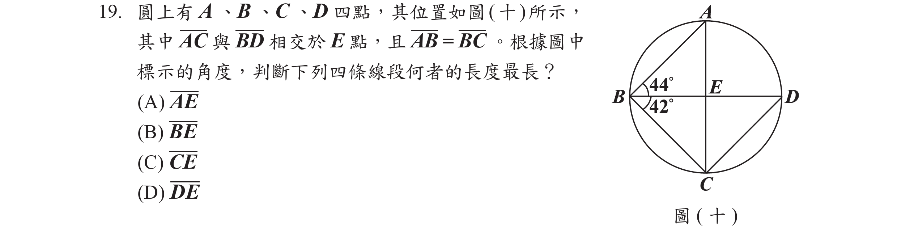
通過率 0.42
答案
(B)
詳解
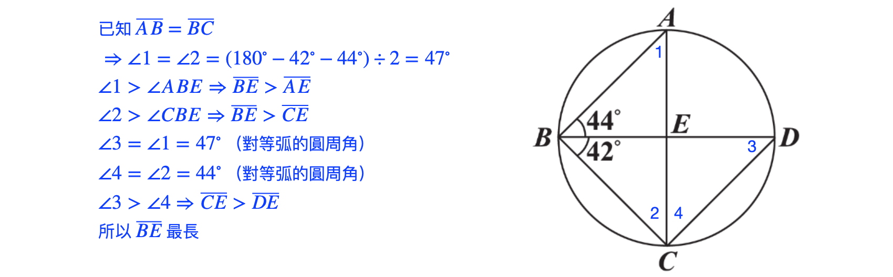
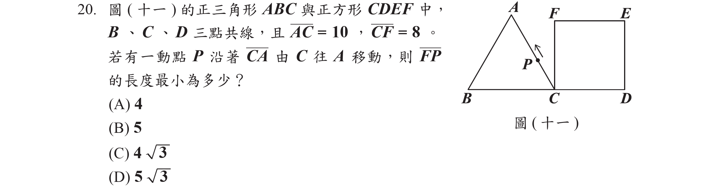
通過率 0.44
答案
(A)
詳解
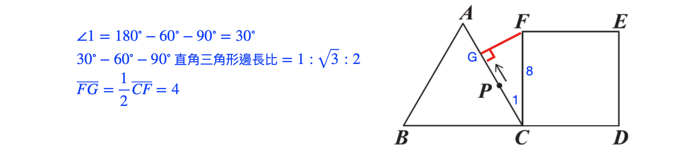
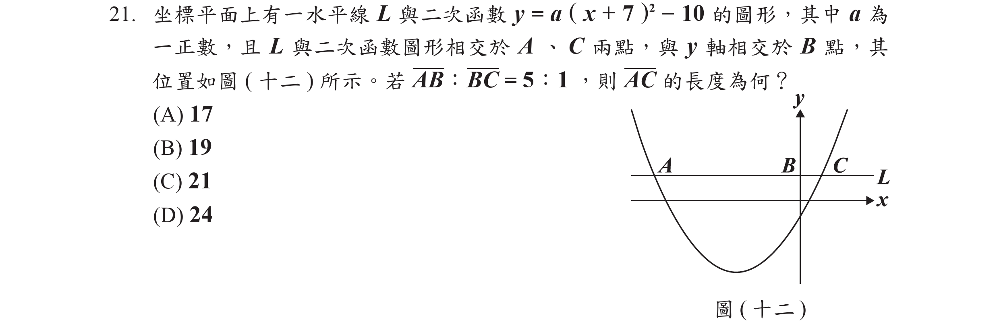
通過率 0.33
答案
(C)
詳解
抛物線上 \(y\) 坐標相同的兩點為對稱點
對稱軸為兩對稱點連線的中垂線
\(A、C\) 為對稱點，頂點 (-7,-10)
設\(A(x_1,y),C(x_2,y)\)
\((x_1+x2) \div 2=-7\Rightarrow x_1+x_2=-14\)（中點 \(x\) 坐標同頂點 \(x\) 坐標 ）
\(|x_1|:|x_2|=5:1\Rightarrow x_1=-5x_2\) 代入上式
\(x_1+x_2=-14\Rightarrow -5x_2+x_2=-14 \Rightarrow x_2=\frac{7}{2}\)
\(\overline{AC}=6x_2=21\)
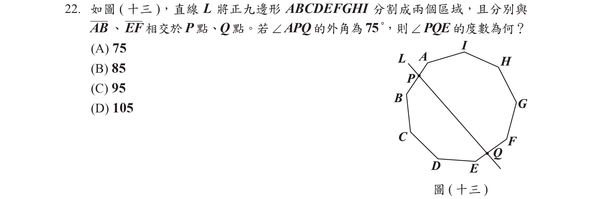
通過率 0.47
答案
(B)
詳解
\(L\) 不是對稱軸，沒有垂直。
\(n\) 邊形內角和\(=(n-2)\times 180^\circ\)
正九邊形一個內角為 \((9-2)\times 180^\circ \div 9=140^\circ\)
六邊形 PBCDEQ 內角和\(=(6-2)\times 180^\circ=720^\circ\)
\(\angle PQE=720^\circ-\angle BPQ- \angle B-\angle C-\angle D-\angle E\)
\(=720^\circ-75^\circ-140^\circ-140^\circ-140^\circ-140^\circ\)
\(=85^\circ\)
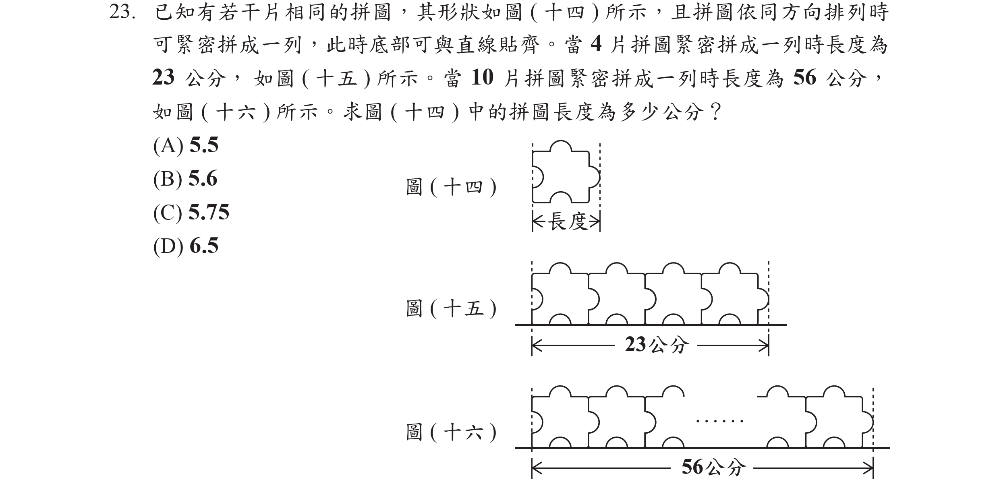
通過率 0.39
答案
(D)
詳解
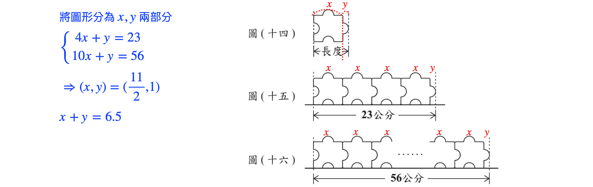
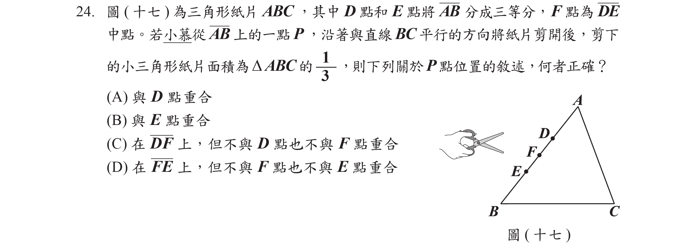
通過率 0.38
答案
(D)
詳解
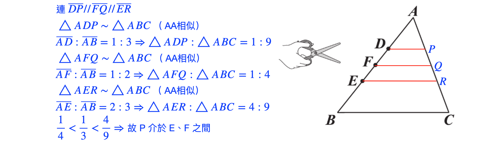
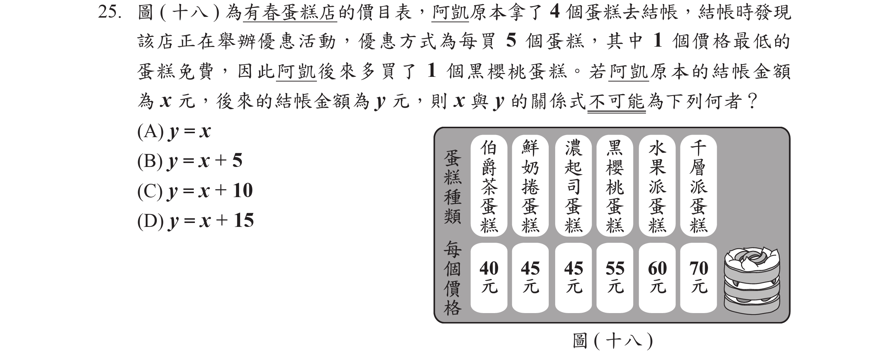
通過率 0.45
答案
(B)
詳解
以每種蛋糕可能為最低價分別討論之
若 5個中最低價的是40元\(\Rightarrow y=x+55-40=x+15\)
若 5個中最低價的是45元\(\Rightarrow y=x+55-45=x+10\)
若 5個中最低價的是55元\(\Rightarrow y=x+55-55=x\)
因為加買黑櫻桃 55元，所以 60、70元不可能是最低價，不需討論
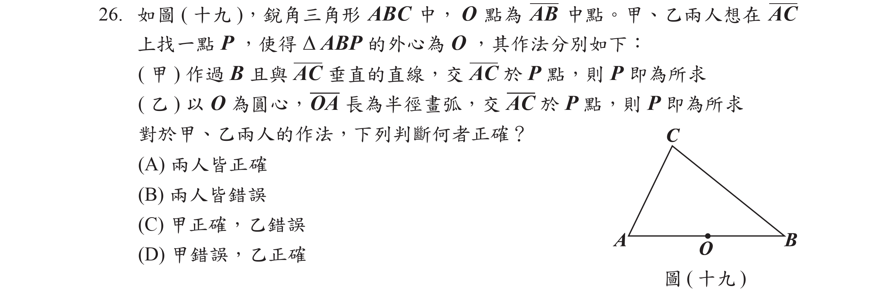
通過率 0.43
答案
(A)
詳解
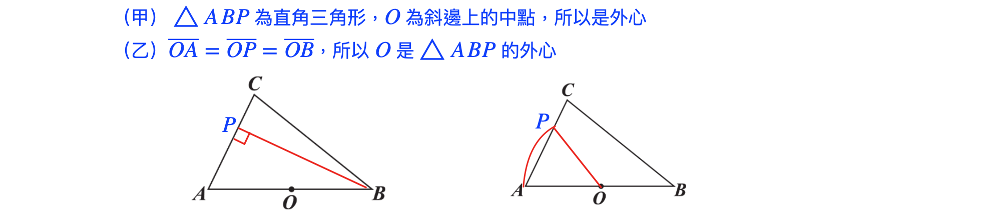
第二部分:非選擇題 (1 ~ 2 題 )
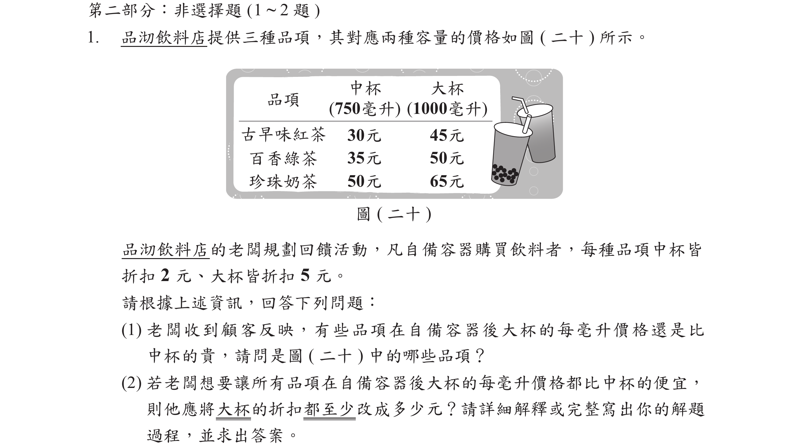答案
（1）古早味紅茶和百香綠茶（2）8元
詳解
除不盡的用分數表示，若用小數表示會產生誤差。 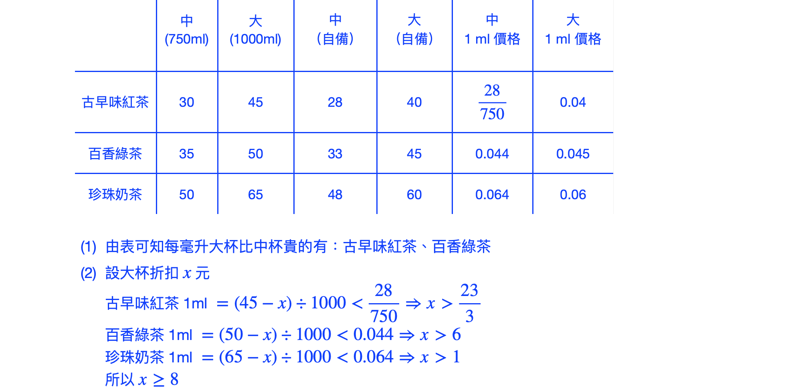
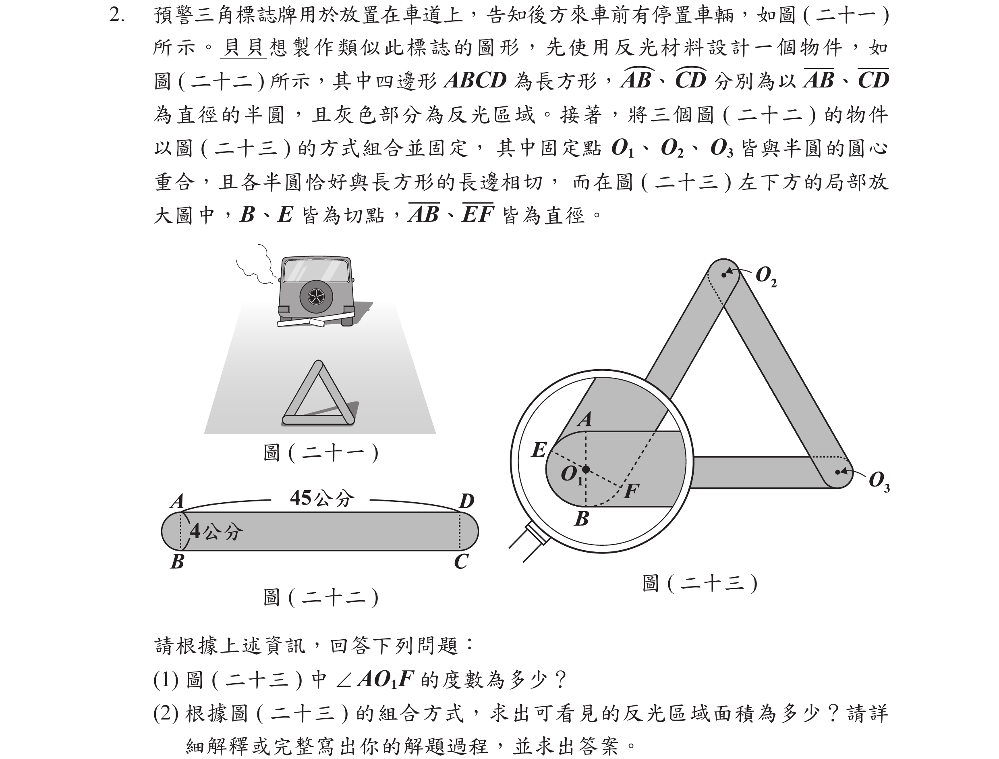
答案
(A)
詳解
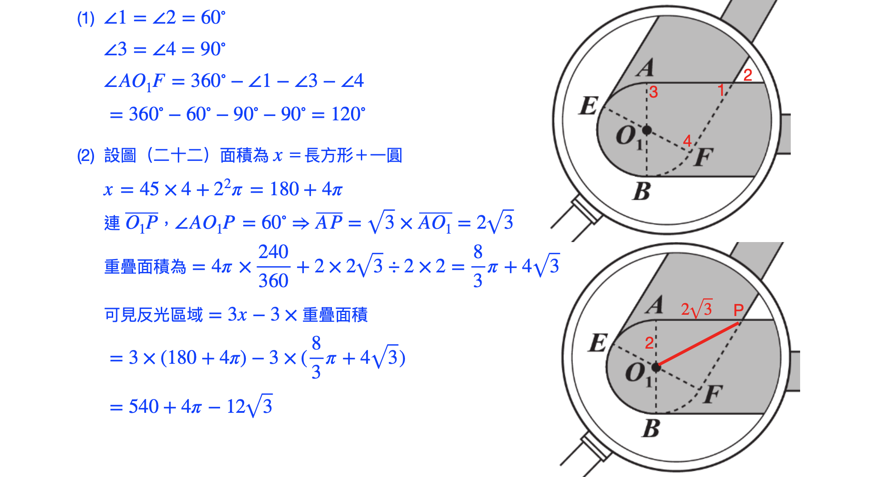